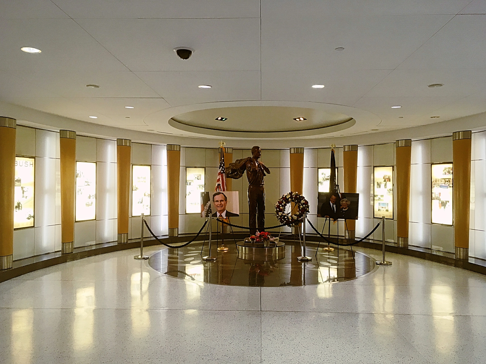

Chapter One, Flying aross the oceans.
第一章。飛往地球的另一端
Taipei - Xiamen - Los Angeles - Houston - Lima
"我想，一年之前的自己永遠也無法預期，這時的自己正踏上一次人生以來最遙遠的旅途。"
那便是我踏出家門的感受。
前往習慣的桃園機場、辦理登機手續、出關，一切和往時皆沒什麼不同，唯一不同的是本次的目的地，將遠在自己的腳下，地球的另一端。
從台北乘廈門航空的班機前往廈門，再轉飛美國洛杉磯；並於洛杉磯轉搭乘美國聯合航空飛往休士頓、在最後飛至秘魯的首都利馬。
總飛行超過二十個小時；含上轉機的等待更是花費了整整兩天的時間。
而我想總計的飛行里程我想可以不必記了，繞了半個地球到了星球另一端 — 那就是我們移動的距離。
一路上沒什麼太值得提的。廈門航空飛美國的班機出乎意料的提供了相當不錯的設施（這裡指的是飛機整體的維護狀況）以及機上服務。（可能和自己豐富的廉航經驗有關）聯合航空則是平淡無奇。我們就這樣懵懵懂懂、以自己體力作為交換的不停轉機，最終到了祕魯的首都，利馬這座城市。

A Basic Memorial Hall inside Houston Aiport. Dec, 2018.
關於美國休士頓喬治布希洲際機場：
(George Bush Intercontinental Airport)
飛往祕魯利馬前，於美國休士頓喬治布希洲際機場做了一次轉機。
這個機場是以美國第41任總統老布希(喬治·赫伯特·華克·布希，George
Herbert Walker Bush)做為命名。
2018年12月自己抵達該機場時，距離老布希逝世(2018年11月)不到一個月的時間，自己因而在機場航廈中見到了些機場方為紀念老布希總統而設立的紀念設施。
此外，值得一提的，該機場內的設施相當的先進，各處均以iPad作為載體提供旅客關於飛機班次查詢、餐廳查詢、連線上網等服務。而機場似乎與美國聯合航空(
United Airlines )有著密切的合作，各處並均可見到關於來聯合航空的廣告。